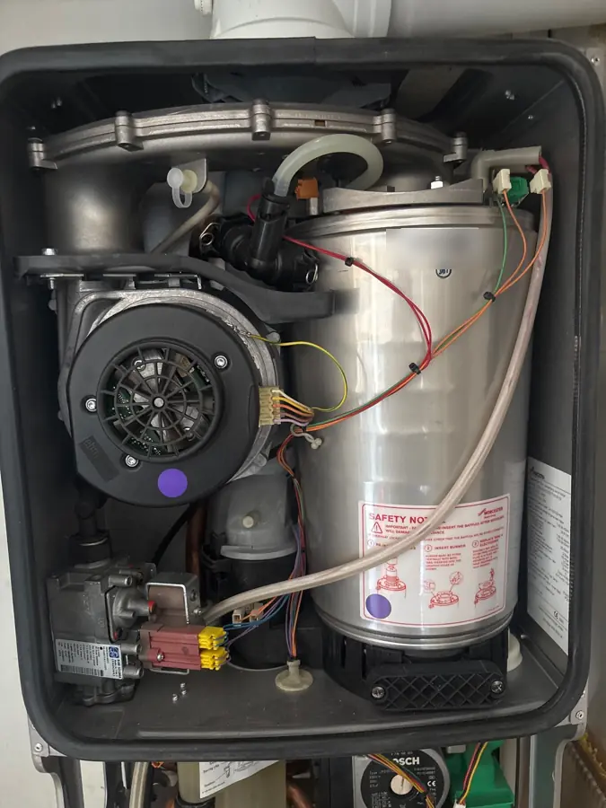

Landlord gas safety certificates, sorted in one visit.
CP12 gas safety checks across London from £95. Book online in two minutes, get your landlord gas safety record emailed after the visit, and never miss a renewal again.
- Gas Safe registered, 985690
- Certificate emailed to you
- Free renewal reminders
- Portfolio discounts
- Boiler, flue and ventilationSafe
- Gas hobSafe
- Gas fireSafe
- Pipework tightness testPass
- Emergency control valvePass
- Smoke alarms testedYes
Gas safety certificate
CP12 landlord gas safety check of every gas appliance, flue and pipework.
Certificate + boiler service
The landlord favourite. Safety check and full annual service, one visit.
Strip-down service
Burner out, heat exchanger cleaned, seals and trap checked.
Strip-down + certificate
The deepest service we do, with your CP12 issued the same visit.
One call. Every property. Every year.
Whether you let one flat or manage a hundred, we keep your gas safety paperwork current and your tenants safe.
Private landlords
Your legal annual gas safety check, done and documented, with the certificate in your inbox.
Landlord gas safety OwnersProperty owners
A homeowner gas safety check for peace of mind, selling, insurance or a new purchase.
Homeowner checks AgentsLetting agents
One account for all your landlords, tenant access arranged for you, certificates sent to everyone.
Agent accounts SaveLandlord contracts
Discounted rates for 2 or more properties, booked automatically before every expiry date.
Contract ratesFrom booking to certificate, without the chasing
Book in two minutes
Pick your visit, choose a day and pay securely online. Fixed prices, nothing hidden.
We arrange access
Tell us your tenant’s details and we contact them to agree a time.
Gas safety check
A Gas Safe engineer checks every appliance, flue, the pipework and the meter controls.
Certificate emailed
Your landlord gas safety record goes to you, and we set your next renewal reminder.
What every landlord needs to know
The Gas Safety (Installation and Use) Regulations 1998 make the annual gas safety check a legal duty for landlords.
A gas safety check you can actually read
Every appliance is tested and recorded: operating pressure or heat input, safety devices, ventilation, flue flow and spillage, and the condition of the flue termination.
- Every gas appliance: boiler, hob, cooker and gas fire
- Flue flow and spillage tests, ventilation and flue termination
- Gas pipework tightness test
- Emergency control valve position and labelling
- Smoke alarm and CO alarm test where fitted

A proper service, not a quick look
A strip-down service takes the burner out and cleans the parts that cause most winter breakdowns. Here is what that involves on the boilers we see most.
Vaillant ecoTEC
What happens on a Vaillant ecoTEC strip-down service, step by step.
Vaillant ecoTEC strip-downWorcester Bosch
What happens on a Worcester Bosch strip-down service, step by step.
Worcester Bosch strip-downBaxi
What happens on a Baxi strip-down service, step by step.
Baxi strip-downGlow-worm
What happens on a Glow-worm strip-down service, step by step.
Glow-worm strip-downIdeal Logic
What happens on a Ideal Logic strip-down service, step by step.
Ideal Logic strip-downAll your records in one place
Sign in to see every certificate, the next due date for each property, invoices and bookings. Download a copy for a new tenant in seconds.
Never miss a gas safety check again
Tell us when your certificate runs out. We text and email you in good time and book the renewal inside the 2-month window, so you keep your date.
Add the other landlord safety checks
Quick answers
How much is a landlord gas safety certificate?
A CP12 gas safety certificate is £95. With a boiler service in the same visit it is £175. Each extra gas appliance, such as a gas fire, adds £25. Landlords with several properties pay less on a landlord contract.
How often do I need a gas safety check?
Every 12 months. You can have the check done up to 2 months before the due date and keep the original expiry date, so you never lose time off your certificate.
Is a CP12 the same as a landlord gas safety record?
Yes. CP12, LGSR, landlord gas safety record, gas safety certificate and gas safety check certificate all mean the same document.
Who gets a copy of the certificate?
You must give existing tenants a copy within 28 days of the check, and new tenants a copy before they move in. We email the certificate to you, and to your agent if you ask.
Do you service the boiler at the same time?
If you choose the combined visit, yes. A CP12 on its own is a safety check, not a service. Most manufacturers need a yearly service to keep the warranty valid, so most landlords book both together for £175.